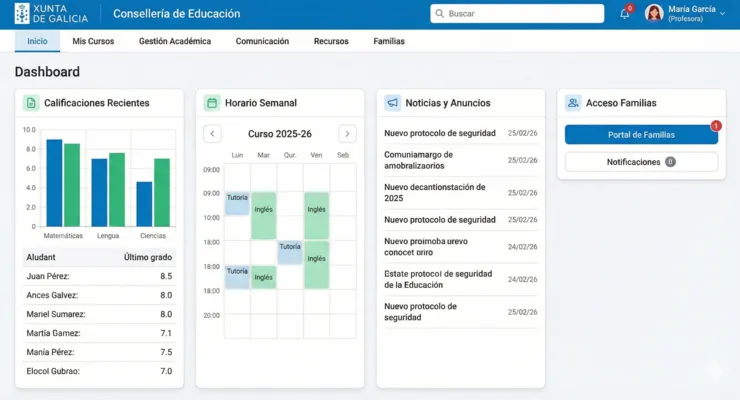
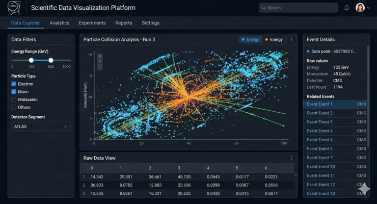
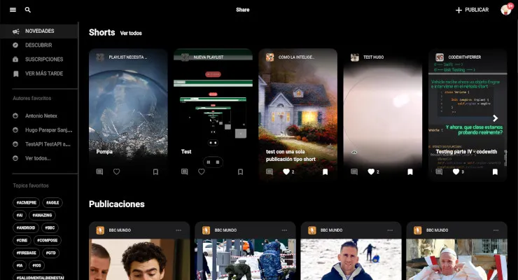
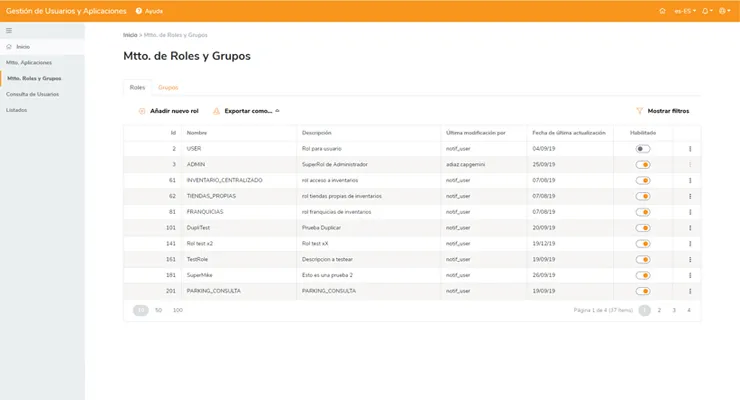
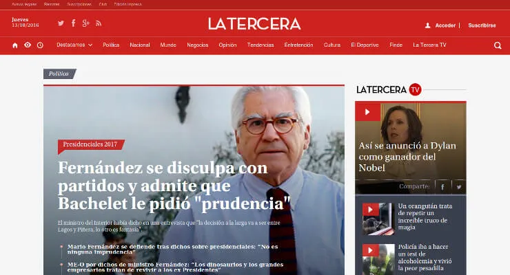

Iván
Gómez
Arquitecto FrontendFrontend Architect
Diseño y lidero el desarrollo de aplicaciones y arquitecturas Frontend escalables basadas en Angular/Vue y TypeScript, con foco en calidad.
I design and lead the development of scalable Frontend applications and architectures based on Angular/Vue and TypeScript, with a focus on quality.
Soy Arquitecto Frontend y Lead/Senior Frontend Developer con más de 15 años de experiencia en desarrollo web, especializado en el diseño de aplicaciones y arquitecturas Frontend escalables basadas en Angular/Vue y TypeScript. Enfocado en optimizar procesos de desarrollo y la entrega de código de alta calidad bajo principios SOLID y Clean Code, así como patrones modernos de arquitectura Frontend (librerías de componentes, Design Systems, Microfrontends y Web Components).
Acostumbrado a trabajar en entornos Agile/Scrum y equipos multidisciplinares internacionales, lidero equipos Frontend, establezco estándares técnicos, facilito la colaboración con UX, negocio y otros referentes técnicos, y aporto mentoring activo para el crecimiento del equipo.
Me motiva incorporarme a proyectos donde pueda definir y evolucionar la arquitectura Frontend, mejorar la calidad del producto y del proceso de desarrollo, y contribuir de forma medible a los objetivos de negocio de la empresa.
I am a Frontend Architect and Lead/Senior Frontend Developer with over 15 years of experience in web development, specializing in the design of scalable Frontend applications and architectures based on Angular/Vue and TypeScript. Focused on optimizing development processes and delivering high-quality code following SOLID and Clean Code principles, as well as modern Frontend architecture patterns (component libraries, Design Systems, Microfrontends and Web Components).
Accustomed to working in Agile/Scrum environments and international cross-functional teams, I lead Frontend teams, establish technical standards, foster collaboration with UX, business stakeholders, and other technical leads, and provide active mentoring to support team growth.
I am motivated to join projects where I can define and evolve Frontend architecture, enhance product and development process quality, and contribute in a measurable way to the company's business objectives.

Vue · Microfrontends · Gov
Angular · TypeScript · Science
Angular · PrimeNG · E-learning
Angular · Design Systems · Retail
PHP · JavaScript · High trafficSi tienes un proyecto que requiere arquitectura Frontend sólida, liderazgo técnico o simplemente quieres hablar de tecnología — escríbeme. Disponible para proyectos remotos e internacionales.If you have a project that requires solid Frontend architecture, technical leadership, or simply want to talk tech — reach out. Available for remote and international projects.